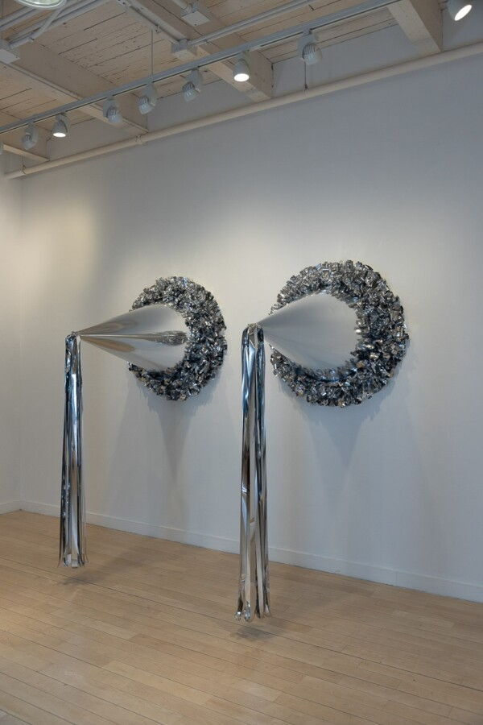

Body Sovereignty
Body Sovereignty
Curator: Danni O’Brien
The body has always been contested territory. Legislated, pathologized, fetishized, disciplined—the body and its desires have rarely been left in peace, let alone in the control of the people who inhabit them.
With this perennial conflict in mind, and on the occasion of Pride Month, ARC Gallery is pleased to present Body Sovereignty, a group exhibition of works that collectively investigate questions of bodily autonomy, and how that autonomy—or lack thereof—impacts corporeal and sexual expression. Curated by Danni O’Brien (she/they), a queer, interdisciplinary artist based outside Baltimore, Body Sovereignty brings together nearly 40 artists’ works that claim radical ownership over sexuality, desire, and bodily identity.
This exhibition showcases art that refuses to be tamed; work that finds the erotic in the accidental, the absurd, the domestic, and the discarded; work that borrows the visual language of instruction and mechanism only to subvert it; work that is bold in its irreverence, polymorphic in its affect, and unafraid to blur lines between innocence and perversion, function and fantasy, the handmade and the found.
The art included in Body Soveriegnty spans mediums, including art assembled from cultural cast-offs, scavenged and repurposed into something fantastical and alive. Art that is cheeky and meditative in equal measure. Art that takes months to resolve what was gathered intuitively, that which arrives slowly at something unsettling and true. In these artists’ hands, the body isn’t treated as mere subject matter, but as a site of survival.
Body Sovereignty is not about shock. It is about depth of feeling, and about understanding, as Audre Lorde wrote nearly fifty years ago: “The erotic is a measure of our most expansive sense of self.”
Exhibiting Artists: Sarah Barnett, Patrick Bell, Neb Berry, Harley Burns, Daisy Canaan, Ollie Caplin, Jana Cariddi, Kelly Clare, Genevra Daley Bell, Stephanie Dishno, Elizabeth Folk, Henry Gepfer, C Hancock, Brooks Harris Stevens, Yani He, Anna Henson, Jamie Ho, Benjamin Hunt, Ali Hval, Erin Juliana, Lauren Kalman, Ariana Leon, Aida Lodge, Maria Macko, Thomas McIntyre, Shug Munic, Matthew Nicholas, M.A. Papanek-Miller, Emily Peca, Emmett Ramstad, Mia Rose, Brooke Schuh, Emma Schwartz, Ivette Spradlin, Leah Tacha, Jean “J.C.” Villalon, Kenzie Wells, Melissa Wilkinson, and Isabel Zeng.